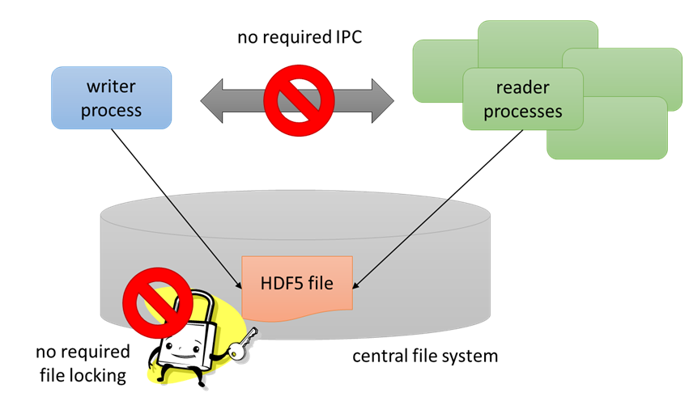
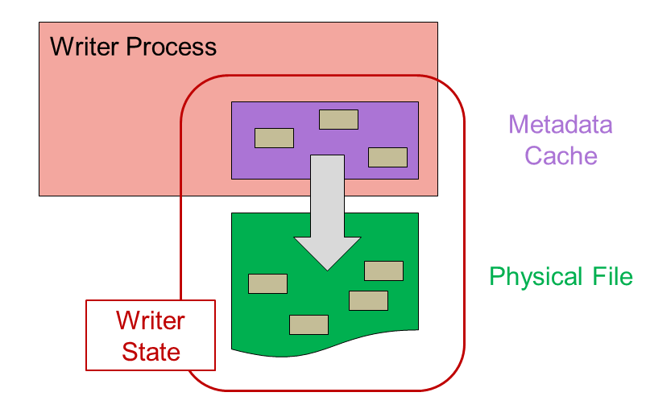
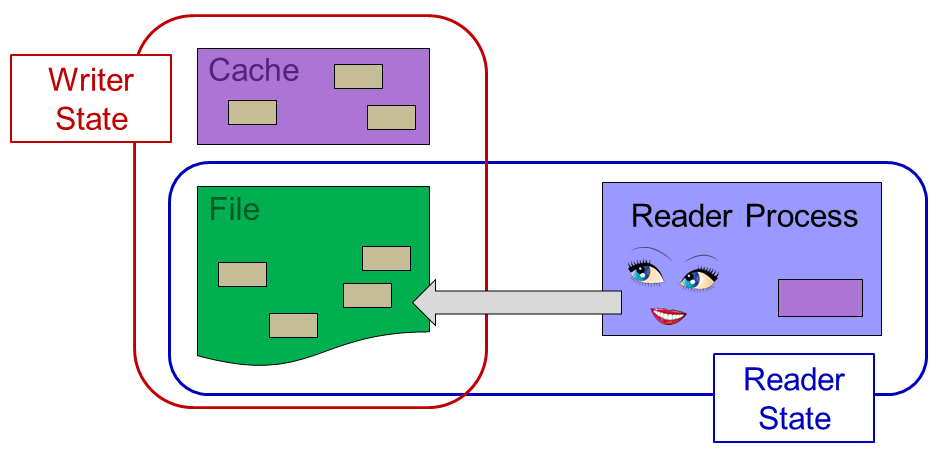

Introduction to SWMR
The Single-Writer / Multiple-Reader (SWMR) feature enables multiple processes to read an HDF5 file while it is being written to (by a single process) without using locks or requiring communication between processes. 
All communication between processes must be performed via the HDF5 file. The HDF5 file under SWMR access must reside on a system that complies with POSIX write() semantics.
The basic engineering challenge for this to work was to ensure that the readers of an HDF5 file always see a coherent (though possibly not up to date) HDF5 file.
The issue is that when writing data there is information in the metadata cache in addition to the physical file on disk: 
However, the readers can only see the state contained in the physical file: 
The SWMR solution implements dependencies on when the metadata can be flushed to the file. This ensures that metadata cache flush operations occur in the proper order, so that there will never be internal file pointers in the physical file that point to invalid (unflushed) file addresses.
A beneficial side effect of using SWMR access is better fault tolerance. It is more difficult to corrupt a file when using SWMR.
Documentation
User Guide
SWMR User Guide
HDF5 Library APIs
Tools
- h5watch — Outputs new records appended to a dataset as the dataset grows
- h5format_convert — Converts the layout format version and chunked indexing types of datasets created with HDF5-1.10 so that applications built with HDF5-1.8 can access them
- h5clear — Clears superblock status_flags field, removes metadata cache image, prints EOA and EOF, or sets EOA of a file
Design Documents
Programming Model
Please be aware that the SWMR feature requires that an HDF5 file be created with the latest file format. See H5Pset_libver_bounds for more information.
To use SWMR follow the the general programming model for creating and accessing HDF5 files and objects along with the steps described below.
SWMR Writer
The SWMR writer either opens an existing file and objects or creates them as follows.
Open an existing file: Call H5Fopen using the H5F_ACC_SWMR_WRITE flag. Begin writing datasets. Periodically flush data.
Create a new file: Call H5Fcreate using the latest file format. Create groups, datasets and attributes, and then close the attributes. Call H5Fstart_swmr_write to start SWMR access to the file. Periodically flush data.
Example Code:
Create the file using the latest file format property:
#define H5F_LIBVER_LATEST
Definition H5Fpublic.h:196
#define H5F_ACC_TRUNC
Definition H5Fpublic.h:50
#define H5P_FILE_ACCESS
Definition H5Ppublic.h:64
#define H5P_DEFAULT
Definition H5Ppublic.h:228
herr_t H5Pset_libver_bounds(hid_t plist_id, H5F_libver_t low, H5F_libver_t high)
Controls the range of library release versions used when creating objects in a file.
herr_t H5Dflush(hid_t dset_id)
Flushes all buffers associated with a dataset to disk.
herr_t H5Dwrite(hid_t dset_id, hid_t mem_type_id, hid_t mem_space_id, hid_t file_space_id, hid_t dxpl_id, const void *buf)
Writes raw data from a buffer to a dataset.
hid_t H5Fcreate(const char *filename, unsigned flags, hid_t fcpl_id, hid_t fapl_id)
Creates an HDF5 file.
hid_t H5Pcreate(hid_t cls_id)
Creates a new property list as an instance of a property list class.
herr_t H5Fstart_swmr_write(hid_t file_id)
Retrieves free-space section information for a file.
SWMR Reader
The SWMR reader must continually poll for new data:
Call H5Fopen using the H5F_ACC_SWMR_READ flag. Poll, checking the size of the dataset to see if there is new data available for reading. Read new data, if any.
Example Code:
while (...) {
}
#define H5F_ACC_RDONLY
Definition H5Fpublic.h:48
#define H5F_ACC_SWMR_READ
Definition H5Fpublic.h:60
#define H5Dopen
Definition H5version.h:903
herr_t H5Drefresh(hid_t dset_id)
Refreshes all buffers associated with a dataset.
herr_t H5Dread(hid_t dset_id, hid_t mem_type_id, hid_t mem_space_id, hid_t file_space_id, hid_t dxpl_id, void *buf)
Reads raw data from a dataset into a provided buffer.
hid_t H5Dget_space(hid_t dset_id)
Returns an identifier for a copy of the dataspace for a dataset.
hid_t H5Fopen(const char *filename, unsigned flags, hid_t fapl_id)
Opens an existing HDF5 file.
Limitations and Scope
An HDF5 file under SWMR access must reside on a system that complies with POSIX write() semantics. It is also limited in scope as follows.
The writer process is only allowed to modify raw data of existing datasets by; Appending data along any unlimited dimension. Modifying existing data The following operations are not allowed (and the corresponding HDF5 files will fail)
- The writer cannot add new objects to the file.
- The writer cannot delete objects in the file.
- The writer cannot modify or append data with variable length, string or region reference datatypes.
- File space recycling is not allowed. As a result the size of a file modified by a SWMR writer may be larger than a file modified by a non-SWMR writer.
Tools for Working with SWMR
Two new tools, h5watch and h5clear, are available for use with SWMR. The other HDF5 utilities have also been modified to recognize SWMR
- The h5watch tool allows a user to monitor the growth of a dataset.
- The h5clear tool clears the status flags in the superblock of an HDF5 file.
- The rest of the HDF5 tools will exit gracefully but not work with SWMR otherwise.
Programming Example
A good example of using SWMR is included with the HDF5 tests in the source code. You can run it while reading the file it creates. If you then interrupt the application and reader and look at the resulting file, you will see that the file is still valid. Follow these steps:
- Download the HDF5 source code to a local directory on a filesystem (that complies with POSIX write() semantics). Build the software. No special configuration options are needed to use SWMR.
- Invoke two command terminal windows. In one window go into the bin directory of the built binaries. In the other window go into the test directory of the HDF5-1.10 source code that was just built.
- In the window in the test directory compile and run use_append_chunk.c. The example writes a three dimensional dataset by planes (with chunks of size 1 x 256 x 256).
- In the other window (in the bin directory) run h5watch on the file created by use_append_chunk.c (use_append_chunk.h5). It should be run while use_append_chunk is executing and you will see valid data displayed with h5watch.
- Interrupt use_append_chunk while it is running, and stop h5watch.
- Use h5clear to clear the status flags in the superblock of the HDF5 file (use_append_chunk.h5).
- View the file with h5dump. You will see that it is a valid file even though the application did not close properly. It will contain data up to the point that it was interrupted.
 1.9.7
1.9.7